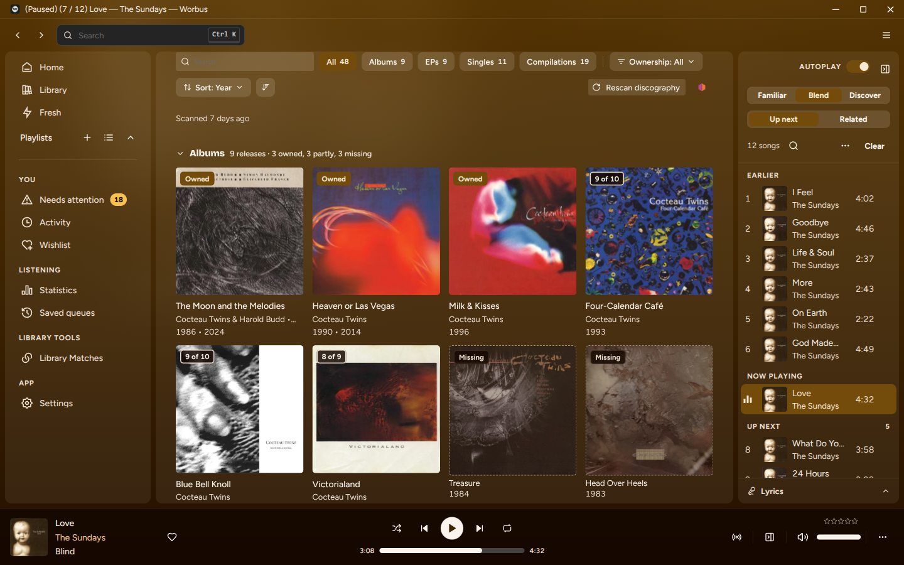
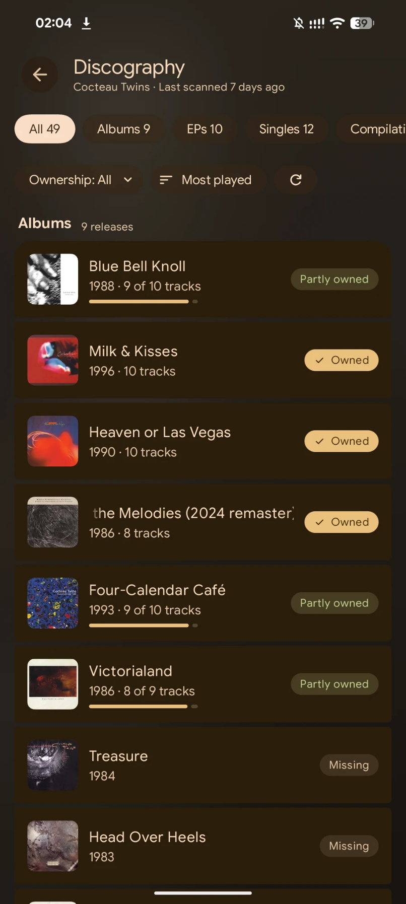
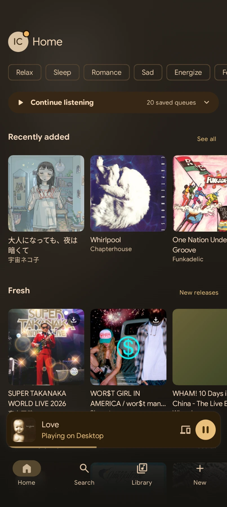

See it
-

An artist page on the desktop: the albums you have, and the ones you are missing, side by side.
-
-

The same page on the phone.
-

Home, with what to play next.
-
What it does
- One session, every device. Start a song on the phone and carry on at the desktop, or hand playback to any device mid-song.
- Your library, finished. Open an artist and the albums you do not have sit among the ones you do, each with where to find it.
- Yours. Your music stays on your Navidrome. There is no Worbus account (you sign in with your Navidrome account), no analytics and no script on this page.
Worbus has three pieces: Worbus for Android, Worbus for desktop, and Worbus Server, one container that runs beside your Navidrome and ties them together. The install guide has all three.